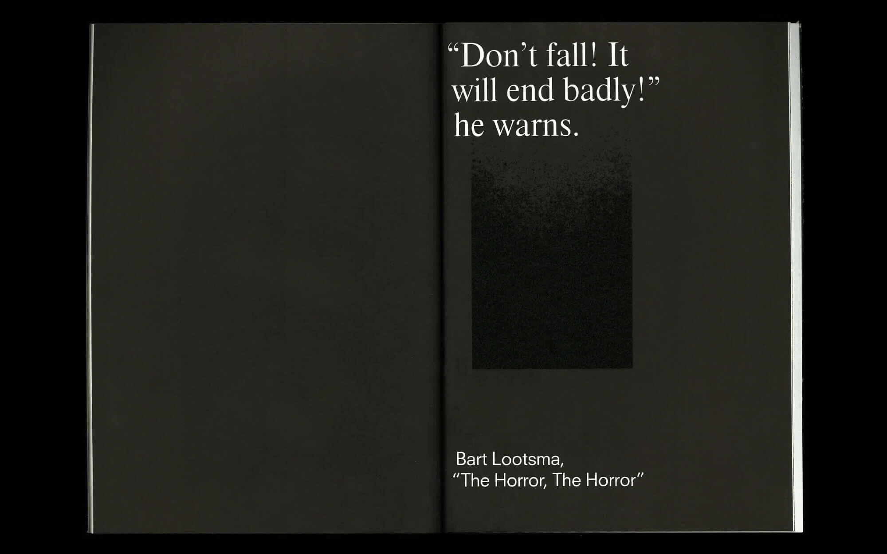
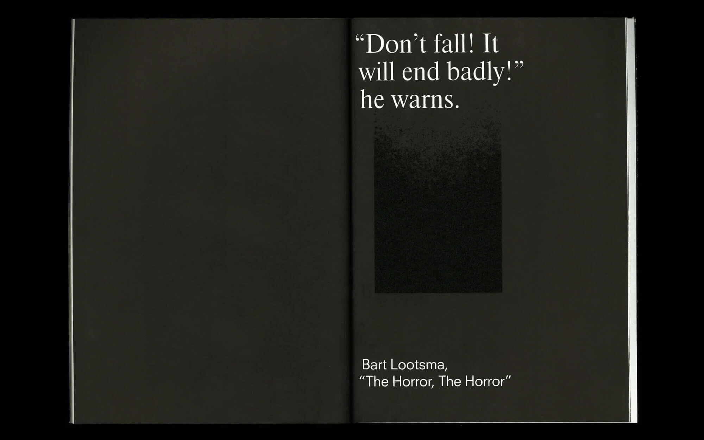

Select Clients

With Projects, Inc.
Creative Portfolio
2020
About
With Projects, Inc. is a multidisciplinary creative agency founded by Jiminie Ha in 2008. With a collective background in fine arts, curation, creative direction, design, publishing and fashion, With Projects, Inc. has since expanded, taking on a unique approach to making and imagining brands from concept to execution.
The agency has been awarded the Rome Prize 2012 and D&AD Award for excellence in Publication/Newspapers design in 2015. In 2016 With Projects' digital campaign for Condé Nast was nominated for a Cannes Lion Award. With Projects, Inc. was nominated for the 2017 Cooper Hewitt National Design Award for Communication Design. Most recently With Projects is the winner of three TDC66 Awards for their book publications.
Interested in the intersections between the various creative fields, White Zinfandel, created by With Projects, Inc., is a continuation of this curatorial experiment, coupling food and art as a reliable means to provoke unexpected reactions, cravings and curiosities.
Jiminie Ha
JIMINIE HA is a creative director, curator, publisher and artist based in New York City. She is the recipient of the Alice Kimball English Travelling Fellowship (2007) and the Rome Prize (2012), granted by the American Academy in Rome for her body of work. She holds a BA from Brown and an MFA from Yale School of Art.
Founded in 2008, W/––– Projects (With Projects) began as an interdisciplinary, installation–focused arts space based in Chinatown, inviting artists, designers and musicians to produce new work under tight spatial constraints. Occupying the interstices of fine arts practices, exhibitions would range from one–time happenings to week long events.
Today W/––– Projects has become an umbrella entity for various art projects in New York and abroad, including White Zinfandel, a biannual arts and culture magazine, and W/ Editions, an ongoing print and object series. Contributors to White Zinfandel include a range of emerging and established voices in the creative and fine arts world that include Pedro Gadhano, Hans Ulrich Obrist, Josh Kline, Seth Zucker, Marina Abramovic, Chris Burden, Simon Castets, Cyril Duval, Davide Balula, Sara Greenberger Rafferty.
As Creative Director, she has supervised the redesign of various arts/culture magazines such as Harvard Design Magazine, Surface Magazine, Bidoun, Art Asia Pacific, and Capricious. She is currently an adjunct professor at RISD, and continues to act as a critic at Yale University, Parsons The New School, and Syracuse University School of Architecture.
She has given lectures at the New York Chapter of the AIGA and PS1 New York Art Book Fair, and her work has been published in The New York Times, La Repubblica, New York Magazine, Interview Magazine, It's Nice That, Metal Magazine, Whitewall Magazine, Idea Magazine, Surface, I.D., IdN, Harper’s Bazaar Korea, Elle Girl, New York Magazine, Art Info,The Daily Beast, Cool Hunting and Paper Magazine. She has given lectures and exhibited at MoMA’s Millennium Magazines (2012), The Armory (2012), Basel (June 2012), Basel Miami (2012), Brno Design Biennale (June 2012), Museum of Art and Design (2013), Haus der Kunst (2013), Hong Kong Design Week (2013), Palais de Tokyo (2014), Swiss Institute (2014).
Select Clients
Case Study
W/—— Project Space
2008–2012
Curation as Design
Converted from a tiny storefront storage space in the heart of Chinatown, W/—— Project Space was a small gallery space started in 2008.
Playing with limitations of space, time and resources, With Projects began as a collaborative experiment with like-minded creatives from the fine arts, design, multimedia, technology and architecture to play with these parameters to create dynamic and interactive temporary installations in Chinatown that would constantly evolve during their exhibition.
Given one month to exhibit work, contributors were also encouraged to invite other participants to disrupt their pieces in ways that could add onto their work over time.
Collaborators included Keegan McHargue, Amy Yao, Rafael Rozendaal, Yemenwed, Peter Sutherland, Confetti System, 2x4, Stuart Bailey with Rob Giampetro, Kingsboro Press, musicians Glasser, Arp, Hunter Hunt Hendrix/Liturgy, and many more.
The body of work curated and generated during this time was awarded the American Academy Rome Prize in 2012.


Case Study
White Zinfandel
2011–
Re-inventing Food Culture
A serial limited edition art book published by W/—— Projects, White Zinfandel is devoted to the visual manifestation of food and culture. White Zinfandel is the continuation of a curatorial experiment, coupling food and art as a reliable means of provoking unexpected reactions, cravings and curiosities. The food inspired topics extend to the launch of every issue, with a curated menu concepted with an invited chef.
This publication emerged right before the explosion of food culture and industry. This publication deviated from other mass publications with its curatorial agenda, each issue being celebrated at Art Basel, NADA, and LA Art Book Fairs in collaboration with celebrated chefs such as Ignacio Mattos, executive chef of Cafe Altro Paradiso and Flora Bar at the Met Breuer. Contributors to White Zinfandel include a range of emerging and established voices in the creative and fine arts world that include Pedro Gadhano, Hans Ulrich Obrist, Josh Kline, Marina Abramovic, Chris Burden, Simon Castets, Cyril Duval, Maia Ruth Lee, Ruby Sky Stiler, Lucy Kim, Titus Kaphar, Mary Reid Kelly, Davide Balula, Sara Greenberger Rafferty and many more.
Despite its original platform as a print edition, every aspect of the publication’s theme is considered during the launch—the location, the special limited edition objects, down to the menus prepared for the guests.
Published as a limited edition art series (500 copies each issue), this publication is in the permanent collection of a number of major art and academic institutions such as MoMA, PS1, New Museum, RISD, Standford, Yale and many more, and has been recognized by the New York Times as, “Imagine if Marcel Duchamp guest edited Bon Appétit.”


Case Study
Harvard Design Magazine
2013–
Redefining Harvard Architecture
Redesign and rebrand of Harvard Design Magazine launched at the Venice Architecture Biennale 2014, with Jennifer Sigler at the helm as Editor-in-Chief and Leah Whitman-Salkin as Deputy Editor.
Rebrand includes HDM identity, and digital presence with ongoing creative direction for the biannual.
D&D Award for Publication Design 2015


 


Case Study
Condé Nast
2016–2018
Create. Connect. Condé Nast.
This campaign transitioned Condé Nast from a publishing house to a media company.
This campaign was nationally dispersed through magazine advertisements and prominent media channels found all around New York City’s iconic city hallmarks such as Times Square and Grand Central Station.
The digital campaign launched via social media and was promoted by celebrity brand ambassadors, ranging from Karlie Kloss, Kerry Washington, Kendall Jenner, Gigi Hadid, Idris Elba and Justin Bieber.
Over sixty short films edited and produced.
Over 300 Million people connected to this viral campaign. Nominated for Cannes Lion Award.